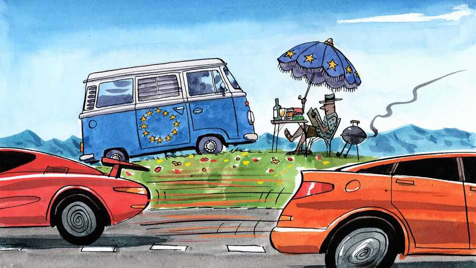

The EU is just too damn slow
Why Brussels needs to pick up the pace
June 25th 2026

In July 2025 America and the European Union agreed on a lopsided trade deal, signed at President Donald Trump’s Turnberry golf course in Scotland. By September officialdom in Washington had completed the necessary paperwork. Getting it through the EU system in Brussels has proved more complicated. There were two legislative proposals from the European Commission, a report from the European Parliament, then some haggling between the bloc’s 27 member states on how they should jointly negotiate with MEPs. Meetings ensued, press releases were issued. By May, some ten months later, a grand jamboree of negotiations between various bits of the EU known inelegantly as a “trilogue” had tentatively signed off on the deal. The parliament then decamped to its second home in Strasbourg (best not ask why) to vote on it. All that now remains is a few more ministerial signatures, then some more press releases, then translation of the whole thing into the EU’s 24 official languages. Everyone involved seems delighted it has taken “only” a year or so to get the whole thing over the line.
Living the slow life is part of Europe’s charm. Those long lunches and interminable summer holidays are as integral to the place as cathedrals and grumpy waiters. Alas, the idea of la dolce vita carries through to policymaking. In the case of the trade deal, forcing Mr Trump to twiddle his thumbs—he huffily threatened to scrap it if the EU didn’t get a move on—may have been a feature, not a bug. But other European initiatives are into their second decade of gestation for no such good reason. Deliberation is a virtue. Europe often seems to be engaged in obstinate self-obstruction.
The EU does not so much kick policy proposals down the road as place them in bureaucratic black holes. What comes out—and when—is a matter of happenstance. A recently passed revision of air-passenger rights required 13 years of legislative contemplation. The idea of a “capital-markets union”, to make citizens’ savings flow more easily to European businesses, seems barely closer to reality today than when it was first proposed in 2015. More humdrum initiatives can drag on for decades. A scheme for companies to register at EU level rather than in each country was first presented in 1988. A fresh push to get it done was unveiled in Davos by the president of the commission, Ursula von der Leyen, in January 2025. And again, identically, in January 2026. Even if all goes well in the inevitable trilogues to come, it will be another two years before it comes into force. Some continents have drifted faster.
Delays blunt the usefulness of the EU’s best-laid plans. In most countries economic stimulus schemes linked to covid-19 are a thing of the distant past: the money was out of the door within months, when the fiscal oomph was needed to combat recession. Not in the EU. There, covid stimulus cash is still being spent. This is unsurprising given that the plan involved a triple-feuille of administrative entities, from Brussels to national governments and regions. Anything to do with money slows Brussels to a crawl. The EU’s budget is set once every seven years, and takes half that long to be agreed upon. Rarely has so little money—just 1% of GDP, give or take—been haggled over by so many for so long.
In part the policymaking torpor is hard-wired into the system. The EU machine in Brussels has many of the responsibilities of a national government, but the working methods of an international organisation. Vetoes abound, either formally or informally. Time-consuming “impact assessments” are required at every turn. Making sure everyone gets their say—often more than once—means that the average law takes nearly two years from its first draft to finally being adopted. In many cases whatever is passed at EU level then needs to be transposed into national law by parliaments in each of the member states, which typically takes another two years. Courts that rule on EU business are slow: antitrust cases take 43 months to get a first ruling, by which time the infraction allegedly committed has long been forgotten. Measures designed to counter abuses of trade rules take so long that triggering them often seems pointless.
Some see virtues in the EU’s ponderous approach besides annoying Mr Trump. Yes, it is a crawling consensus machine. But it is better to legislate properly than rush into mistakes that later need to be corrected. (America’s hasty enactment of the Turnberry deal was in part reversed by the courts, for example.) Yet that argument would be more convincing had the EU itself not recently been obliged to scrap a heap of red tape, crafted in a bout of over-regulatory zeal just a few years ago. And even this effort to simplify existing legislation is taking for ever, mired in procedure.
The EU‘s slothful approach is a luxury it can no longer afford. Slow and steady worked in calmer geopolitical times, when America guaranteed Europe’s security, China bought its exports and Russia was flailing. Now the world is changing faster than the EU can act. Its adversaries know this. Scott Bessent, America’s treasury secretary, mocked “the dreaded European working group” that crops up as a response to all of the continent’s woes—a gibe that stung. China is winning a trade war that Europe is only just now discussing, and promising to discuss again soon. Europe’s sole appropriately speedy endeavour is its aid to Ukraine since Russia’s invasion—and even there, it started slow in 2022.
Can Europe pick up the policymaking pace? That may seem an odd question to ask just as Eurocrats are leaving Brussels for the summer. The obvious solution is for gridlocked projects to advance among a subset of countries, an approach being tried with the capital-markets union. That seems more realistic than revisiting the EU’s constitution, which would require a good decade of haggling before it could speed things up. Europe’s deliberation once looked wise, or at least defensible. Now it looks foolish. ■
Subscribers to The Economist can sign up to our Opinion newsletter, which brings together the best of our leaders, columns, guest essays and reader correspondence.